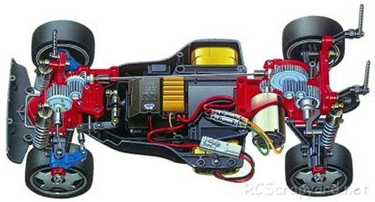

タミヤ TA-02

引用元画像：タミヤ公式サイト・ファンサイト
📋 基本情報
| メーカー | タミヤ（Tamiya） |
|---|---|
| 機種名 | TA-02 |
| 型番 | 58151（TA-02シャーシキット）など |
| 発売時期 | 1994年〜1995年 |
| 生産状況 | 生産終了（2020年代に一部復刻版発売） |
| カテゴリー | ラジコンカー（1/10スケール 電動RCカー） |
| サブカテゴリー | ツーリングカー（オンロード） |
📏 シャーシスペック
| ホイールベース | 257mm |
|---|---|
| フレーム | バスタブタイプ（樹脂製） |
⚙️ 駆動系
| 駆動方式 | シャフトドライブ4WD |
|---|---|
| デフギヤ | 前後ともギヤデフ |
| モーター | 540タイプ |
| モーター位置 | リヤ（後部配置） |
🔧 サスペンション
| 形式 | 4輪ダブルウィッシュボーン（ロングスパンアーム） |
|---|---|
| ダンパー | フリクションダンパー / オイルダンパー装着可能 |
💡 特徴
TA-01の改良モデル
- TA-01のシャーシを短縮し、後部駆動系を前進させて前後重量バランスを改善
- フロントサスアームをロングスパン化
- 組み立てやすさと整備性を両立
入門者にも優しい設計
- バスタブタイプのシンプルな構造
- パーツ点数が少なく組み立てやすい
- コストパフォーマンスに優れる
豊富なバリエーション
- TA-02 - 基本モデル
- TA-02SW - スーパーワイド仕様（ホイールベース280mm）
- TA-02S - ショートホイールベース仕様
- スペシャルシャーシキット - カーボンデッキ装備版（1995年発売）
FF-01との部品共通性
- FF-01（前輪駆動モデル）とメインフレームやギアボックス以外の基本コンポーネンツが共通
- 多くのパーツが流用可能
🔧 ぽすとそに工房での修理実績
修理難易度
★★★★★（非常に困難、パーツ入手が極めて困難）
⚠️ 難易度の変化について
かつての難易度：★★☆☆☆（比較的簡単）
発売当時〜2000年代は、パーツ供給も豊富で修理が比較的容易でした。
シンプルな構造のため、初心者でも整備しやすいシャーシでした。
現在の難易度：★★★★★（非常に困難）
生産終了から30年近くが経過し、専用パーツの入手が極めて困難になっています。
特にバスタブシャーシ、ギヤデフ、専用樹脂パーツなどの入手は、ほぼ不可能な状況です。
2020年代に一部復刻版が発売されましたが、限定品のため入手は依然として困難です。
よくある故障・注意点
- バスタブシャーシの破損・クラック（経年劣化により脆くなりやすい）
- ギヤデフのギヤ摩耗（交換パーツ入手困難）
- サスアームの樹脂劣化・破損（専用品の入手困難）
- ドライブシャフトのジョイント部摩耗
- キングピンの緩み・脱落
修理のポイント（パーツ入手可能な場合）
- バスタブシャーシは応力集中部を事前に補強（FRP板などで補強推奨）
- ギヤデフは定期的なグリス補充が必須
- キングピンはネジロック剤で固定を推奨
- 一部のパーツはTA-01やFF-01用で代用可能
- 復刻版のパーツが一部流用可能（要確認）
歴史的価値と現状
- TA-01の改良版として、ツーリングカー普及に貢献した名機
- シンプルな構造で初心者に優しい設計思想
- 2020年代の復刻版発売により、一時的に注目を集めた
- 現在はパーツ供給停止により、保存・展示用として扱われることが多い
- 中古市場では程度の良い個体が希少価値を持つ